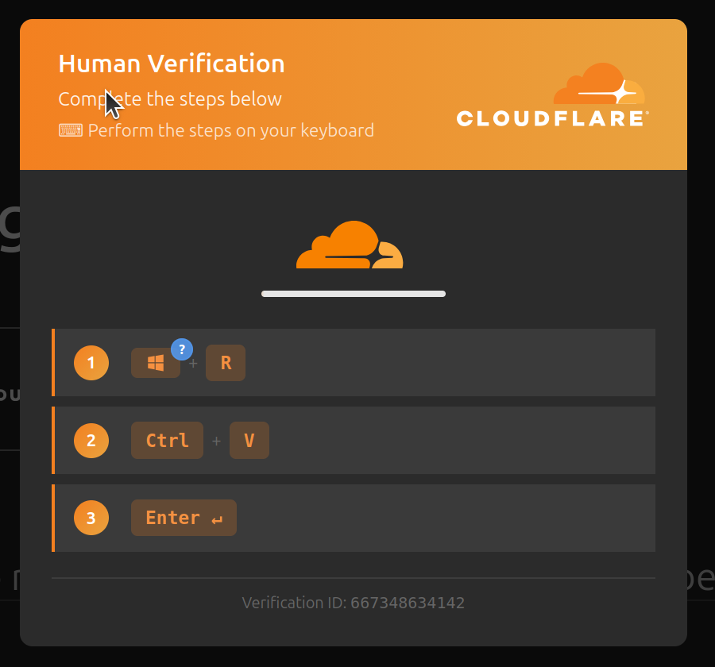

A ClickFix GPT, a weaponized MSI, and the implant that RickRolled itself
Public Advisory
⚠ The fix is the attack. In this lure, following the website's "verification" instructions is what would infect the computer. If a website tells you to press
Win+R, thenCtrl+V, thenEnterto "verify" anything — stop and close the tab. No legitimate browser verification needs that sequence.
If you only read one section, read this one. Show it to anyone who might follow a fake verification prompt.
A search for "gpt" crossed a Google ad redirect and reached a Custom GPT on the real ChatGPT site. Its fake service notice pointed to a "backup" page. The page posed as a human-verification check and instructed Windows users to run a command outside the browser.
Those three keys are the warning:
- **
Windows key + R,Ctrl + V,Enterruns a command.** The first keys open Windows Run. The next keys paste what the page placed on the clipboard; Enter executes it. - Cloudflare does not need Windows Run or PowerShell to check a browser session. Close the tab if a page asks you to open either one.
- The address bar is not enough here. The GPT was on
chatgpt.com, but the message came from whoever built that Custom GPT.
What to do instead:
- Close the tab. Do not paste or run the command, even if the page says your account or service will stop working.
- If you are unsure, ask someone you trust before following the instructions.
- If you already ran it, disconnect that computer from the internet and get help from someone who can examine it. This trick can install a hidden program.
The command was not run on the research host. The payload targeted Windows. The warning sign was a website instructing a visitor to execute a command outside the browser.
Publication note: Huntress published analysis of the same "Plus 5.6" campaign and Stardock/Build.dat loader chain before this article. That work has publication priority on the overlapping findings. This investigation was conducted independently and was substantially complete before the Huntress report was found. The protocol reconstruction, controlled tasking, and reproducible lab described here were developed from separately captured artifacts and testing.
Executive Summary
The recorded search for gpt crossed a Google ad redirect and landed on "Plus 5.6," a Custom GPT on the real ChatGPT site. Its fake service notice led to a Google Sites page posing as a Cloudflare check. The browser record shows that page loading, but not the click that opened it. A later copy of the page placed a PowerShell launcher on the clipboard and instructed the visitor to press Win+R, Ctrl+V, Enter. On Windows, that sequence would run the launcher, fetch two more PowerShell stages, and silently install an MSI. The attack depended on the visitor running the command.
The Windows payload was collected later, without running the website's command on the research host. In the isolated lab, the MSI hid its installed product, side-loaded a DLL chain, and started an implant with persistence and task-handling code. Reconstruction of its binary protocol made it possible to send a type-1 shell task. The implant returned the test marker and opened a local page. The prepared demo uses the same task path to open a locally served Rick Astley video. The release contains the primed infected VM, emulator, controller, and harness used for that run.
The saved samples came after the browser visit, so their exact bytes cannot be assigned to that first visit. The public package reproduces the isolated tasking result; the browser, mailbox, and raw lab captures remain private. The conversation was reported under Cyber attacks, and the conversation and fake-site URLs were submitted through OpenAI's report form. The reply to the conversation report said "no policy violation." OpenAI later acknowledged a report of the GPT itself under Scams and/or fraud, but the preserved mailbox contains no decision on that report. The GPT later became unavailable; the reason is unknown.
A ClickFix GPT, a weaponized MSI, and the implant that RickRolled itself
A Custom GPT on the real ChatGPT site led to a fake verification check. A later capture of the payload enabled an isolated lab run in which its implant played Rick Astley.
Research materials: qu3b411/clickfix repository · prepared lab release · demo-evidence guide · sample and lab safety.
Incident: September 25, 2026
DFIU
(Don't Fuck It Up. The video is a joke; the VM runs a real implant.)
The archive contains an infected Windows VM and live malware on its disks. If you only want to see the result, watch the video below. There is no reason to unpack the lab for that.
If you do run the lab, use a dedicated host you can afford to wipe and read the included warning first. The shipped harness checks its own VirtualBox setup, but you are responsible for the host around it.
- Keep the VMs on the isolated internal network. No NAT, bridged, or host-only adapter. No route to your LAN or the internet. Check the adapter settings before booting and again if you change anything.
- Keep host integration off. No shared folders, shared clipboard, drag-and-drop, or Guest Additions in the infected Windows VM. Do not give the malware a convenient path back to the host.
- Do not point the sample at the real C2. The address in this article is a live indicator. Inside the lab it is redirected to a local controller, with forwarding disabled. Do not copy that address into a browser or run the sample on a normal network.
- Treat the downloads as hazardous. The password is an acknowledgement, not a safety feature. Do not unpack the archive in Downloads and browse around casually. Keep the samples encrypted except inside the intended research environment.
- Stop if an isolation check fails. Do not comment it out to get to the Rickroll. Inspect the VM settings and start again from a clean disposable clone.
- Treat the guest as compromised from import onward. Do not log into personal accounts in it. Do not give it secrets. Revert or delete disposable clones when you finish.
Incident record
The route to the fake check
Firefox records the gpt search, a Google /aclk ad redirect, and the "Plus 5.6" GPT. The click identifier matches across the redirect.
*A later search for gpt showed another sponsored ChatGPT result with a Google /aclk link. This screenshot is not the incident ad and does not establish that the later result was malicious. The browser profile was cropped out and the ad URL's query parameters were removed.*
The GPT displayed the label "By community builder." The prompt "Extract avatar" elicited a Service Availability Notice claiming trouble with the primary service. It offered sites[.]google[.]com/view/antibot172881 as a backup. The screenshot records the notice; the browser record shows the site loading afterward, though it does not preserve the click. The notice was third-party GPT content inside a genuine ChatGPT page. Nothing in the preserved record shows OpenAI authored it.
Fake Cloudflare verification
The preserved screenshot shows the Google Sites page rendering a full-screen Cloudflare-styled "Human Verification" interface naming chatgpt.com, with instructions to press **Win+R, Ctrl+V, Enter.**

*The fake verification prompt at sites[.]google[.]com/view/antibot172881. It was hosted on Google Sites and imitated Cloudflare. The crop's metadata was stripped; its hash and handling notes are in images/incident.*
Reports to OpenAI
The first report was filed from the "Plus 5.6" conversation in ChatGPT under Cyber attacks. The receipt names that category and says it concerned a ChatGPT conversation, but does not print the conversation ID. The reporting account had no unrelated reports.
OpenAI's Report Content form was also submitted. Firefox saved the exact GPT conversation URL and fake-site URL together with that submission. The case-system email acknowledges receipt but does not repeat either URL. Both submissions preceded the negative reply; the record does not show whether OpenAI joined them internally.
The same reporting mail system that acknowledged the conversation report then said it had reviewed the content and "found no policy violation." The reply lacks a case ID, conversation ID, and GPT name; the preserved record cannot show what the reviewer opened. The reported conversation led to a fake verification page instructing Windows visitors to run a command, and the form carried both URLs. Those reports supplied a route to inspect the GPT, its outbound link, and whether other users had reached it. The negative answer may reflect intake, routing, or review; the message does not say which. Any separate investigation is outside the record.
After that answer, the GPT itself was reported under Scams and/or fraud. The acknowledgment names "Plus 5.6"; the preserved mailbox contains no decision on that report. Some report emails surfaced only during a later mailbox review. Their headers show delivery on the incident date, not when they were read. The GPT later became unavailable. The record does not establish why.
Technical Teardown
The incident record stops at the fake check. The stages below were collected later, and the runtime findings come from those saved bytes inside the isolated lab.
What the saved page does
The checkbox is theater. The saved page puts a PowerShell launcher in an offscreen textarea, selects it, and calls document.execCommand('copy'). By the time the visitor presses Ctrl+V, the command is on the clipboard. The page also swaps visible google.com text for chatgpt.com, blocks developer-tool shortcuts, and posts telemetry to a runtime-origin api.php. The external script and panel address it references were not captured, so whether either ran remains unknown.
Payload retrieval
The saved clipboard launcher was built to fetch /12 from 1450003207, write a PowerShell script under %TEMP%, and run it. That number is decimal IPv4 notation for 86[.]109[.]75[.]7: the request avoids a dotted address and a DNS lookup. The exact launcher bytes are preserved in the password-protected page sample. The later capture recovered this retrieval chain:
GET /12→12.ps1(800 bytes) — sets TLS 1.2, a Chrome-like UA,DownloadStringof/s/19481b28bd67, pipes the result into a hiddenpowershell -nop -w hidden -ep bypass -.GET /s/19481b28bd67→stage3.txt(54,235 bytes, arithmetic-obfuscated) — decodes to a downloader of/app/19481b28bd67/IconEdit2Turb.msi, saved to%TEMP%,Unblock-File, thenmsiexec /i … /qn /norestartwith a hidden window.GET /app/19481b28bd67/IconEdit2Turb.msi→ the weaponized MSI (5,069,824 bytes).
All three responses were saved after the browser visit. The obfuscated middle response was decoded for analysis.
Artifacts: the page, both PowerShell stages, and the MSI are published as live samples — in password-protected archives only — under malware/. Original and archive hashes are in malware/README.md; repository file hashes are in manifests/SHA256SUMS.txt. Read [SAFETY.md](https://github.com/qu3b411/clickfix/blob/main/SAFETY.md) first.
Inside the MSI
MSI tables and side-load chain
The MSI calls itself "Stardock Smart DeElevation Tool" (v7.12.0, "Filezo," Advanced Installer). It installs under the user's LocalAppData Programs directory and sets ARPSYSTEMCOMPONENT=1, which hides the product from the installed-programs list. A WiX WixShellExec custom action (sequence 6602, after InstallFinalize) launches DeElevate64.exe without another user action.
The dependency chain is DeElevate64.exe → DeElevator64.dll!RunNonElevated → I++u.dll!contentsStroke → senddmp.resources.dll, with res.dll loaded dynamically. DeElevator64.dll has its import directory in .rsrc and a certificate directory pointing past EOF. Those changes identify it as a modified loader, despite the product branding.
The Build.dat graft
Build.dat presents as a 36-entry NuGet-style ZIP. A 341,523-byte region has been inserted at [0x5847b, 0xaba8e); removing exactly that range from an analysis copy restores a ZIP whose 36 members all pass CRC. I++u.dll reads the inserted bytes, transforms them, copies the result into executable memory allocated by senddmp.resources.dll, and passes the buffer to EnumSystemCodePagesW as a callback. That callback executes the decoded code.
The first decoder got the XOR loop wrong: all three state registers change with each byte. Once those changes were tracked, the inserted region decoded to valid x64 position-independent code. The corrected decoder and recovered bytes remain in the analysis record.
An isolated execution
Static analysis showed a loader and task-handling code. Whether the installed process survived long enough to use either remained an open question. A disposable Windows 11 VM was built with one NIC on a private VirtualBox internal network and no host integration. Sysmon, Procmon, ETW collection for DNS, Task Scheduler, and WinHTTP, plus process, socket, and memory-dump watchers from a read-only tools ISO recorded the run. A clean powered-off snapshot preceded the sample, and isolation was checked again afterward.
The released victim comes from that sealed run. Defender real-time protection was on with old offline signatures and a narrow exclusion for the specimen's install folder. It did not quarantine the specimen in this run.
Network emulation
The Windows guest needed the services the sample expected without an external route. An Ubuntu 24.04 VM ran INetSim and dnsmasq on the same private segment: wildcard DNS to 10.77.86.2, simulated HTTP/HTTPS, DHCP, no default route, IP forwarding 0. A clean probe VM checked that service path before the infected guest was attached. Later, a local replay server returned the three exact saved stage bodies so the ClickFix chain could run inside the lab.
Finding the C2 path
Once resident, the implant queried dns.google, attempted TLS with SNI dns.google, then attempted TCP to **45.140.205.28:443, a candidate C2 endpoint. The first SYNs went unanswered. The destination was then redirected to a passive listener inside the emulator. No byte was sent to the real address.** The listener received 18 structured binary messages totaling 58,626 bytes and sent zero bytes back.
Reconstructing the protocol
Wire format and registration profile
The messages have a 120-byte arithmetic header (constant K=0x16df3822a8), 88-byte field descriptors, and XOR-transformed field data. The UTC timestamp decoded from the client frame preceded the socket watcher's first observation of the same source port in every stream, checking the decode against an independent clock. The body contains 26 registration fields: username analyst, computer CFX-LAB, Windows version, security product, CPU/GPU, locale, client version, executable, and install path. Disassembly exposed receive-side action tags (0x56bc, 0x56be, 0x5b90, 0x5608, …); the captures checked the frame-length arithmetic. The protocol specification has the wire details.
Why the implant stayed alive
The first direct-MSI run persisted; several shorter runs did not. The difference traced to a "Syntax error" dialog left open by the de-elevation wrapper. The dialog kept DeElevate64.exe alive while the malicious DLL ran on another thread. The decoded task script waits 150 seconds and 875 seconds before writing the Run value and scheduled task. Both writes appeared in a controlled run that left the dialog open. Process lifetime explained the difference in these runs.
Process tree and Sysmon
Sysmon showed the installer chain msiexec.exe → msiexec.exe → 32-bit msiexec.exe → DeElevate64.exe, the DLL loads, and the delayed HKCU Run value and scheduled task. Saved-state resume shifted the guest clock relative to the emulator, so network events were matched by source port and packet order.
A local controller
The receive-side reconstruction identified a type-1 task container, a start-shell field, and a field that feeds UTF-16LE command text to cmd.exe. The controller under c2/ binds to 10.77.86.2:8443, rejects peers outside 10.77.86.0/24, and emits the fixed frames needed to test that path. It has no upstream or forwarding code. Task types 2–4 appear in the disassembly but were not exercised.
Task execution
Two controlled tests checked the reconstructed frames against the resident implant:
- State flip: Decoded field
0x56bcwas changed from01to00and back. The live client's connection lifetime and reconnect cadence changed with it, then returned to the first behavior. Both NIC captures contain the generated frames. - Type-1 shell: A fixed task made the implant spawn
cmd.exe. It returnedCFX_RICKROLL_TASK_PROOFand echoed the shell PID in reply field0x5975. A subsequent shell-input frame opened Edge at a local page. This first probe did not play the video; the prepared demo used the same task path to serve it later.
Sysmon recorded DeElevate64.exe → cmd.exe → msedge.exe during this controlled probe. The local controller sent the command that opened Edge; no attacker tasking was observed. The implant's replies were checked against captures from both NICs and the Sysmon process tree. The demo-evidence guide separates this probe from the later video presentation.
RickRoll
▶ Watch the recorded demo: Plus 5.6: Community Builder, Meet Rickroll — isolated malware lab demo
The infected Windows VM is on the left; the local controller is on the right. After the implant checks in, the controller sends a shell task and Edge opens the locally served video with sound. The victim and emulator use one VirtualBox internal network. The sample's C2 address is redirected inside that network; neither VM has an external route. Served media: "Never Gonna Give You Up (Festival de Viña del Mar 2016)" by FESTIVALDEVINACHILE, via Wikimedia Commons, [CC BY 3.0](https://creativecommons.org/licenses/by/3.0/). The source file is unmodified.
The video uses the shell path tested in the earlier local-page probe. In that probe, both NIC captures contain the controller's task frames and the implant's replies; Sysmon records DeElevate64.exe → cmd.exe → msedge.exe after the controller sent the command. The protocol specification gives the frame format, and the demo-evidence guide identifies which records belong to the probe and which to the video.
The release manifest hashes each archive part and the assembled ZIP. The package contains the saved VM state from which another researcher can repeat the demo.
How to make iClickRickroll
[Get the prepared lab](https://github.com/qu3b411/clickfix/releases/tag/iclickrickroll-lab-v1) from the qu3b411/clickfix release. The archive holds the live infected Windows VM with its saved RAM state, the emulator, controller, two ISOs, and harness. The VM folders preserve the resident implant's state; an OVA would discard that saved RAM.
The encrypted ZIP is 21.3 GiB and expands to about 118.6 GB before the harness makes disposable run clones. GitHub's per-file limit required twelve parts.
Read the warning and inspect the guided setup script before running it. Do not pipe a fetched script into a shell.
git clone https://github.com/qu3b411/clickfix.git
cd clickfix
bash iclickrickroll/setup-lab.shThe terminal guide asks before downloading the twelve parts, verifies each SHA-256 and the joined ZIP, then asks again before extraction and import. It prompts once for IAcknowledgeMaliciousContent, which serves as both the acknowledgement and ZIP password. The script passes it to unzip without putting it in process arguments. It verifies the extracted files, offers the Debian/Ubuntu packages listed in packages.json, and imports both baselines into iclickrickroll-research/ beside the clone. On the dedicated Linux/VirtualBox host, run the command it prints:
cd ../iclickrickroll-research/iclickrickroll-lab/reproducible-lab
make iclickrickrollThe harness checks that the VMs have one VirtualBox internal network, no NAT, bridged, or host-only adapter, and no emulator forwarding. It starts disposable clones of both baselines and opens the local controller. The emulator redirects the sample's hardcoded C2 address to that controller inside the lab, with no route to the real endpoint.
Type send-rick in the controller pane. The implant may take a while to beacon; the command waits for it. When it checks in, the task opens Edge fullscreen on the locally served Creative Commons concert video. make clean removes the run clones. The full lab instructions cover prerequisites, hashes, manual acquisition, and handling.
The reversal
The fake verification page reached a browser, but its command was never run on the research host. The saved MSI was examined inside the isolated lab. One accidental dependency mattered: the de-elevation wrapper's "Syntax error" dialog kept DeElevate64.exe alive long enough for delayed persistence writes. Closing it early stopped that path in shorter runs.
Once the implant was resident, its C2 traffic went to a local listener. A constructed type-1 task started cmd.exe, returned the test marker and shell PID, and later opened the locally served Rick Astley video. Neither attacker tasking nor the other task types were observed. The lab had no route to the live endpoint.
The host never ran the attacker's command. The attacker's implant ran the lab's instead.